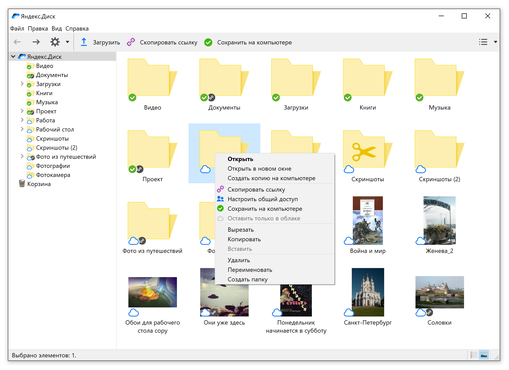

Новое приложение «Диск 3.0 для компьютера»
27 марта, 12:07
Чуть больше года назад мы запустили экспериментальную версию Диска для компьютера. За это время мы собрали мнения и отзывы, доработали программу, улучшили сценарии использования и поколдовали над визуальной частью.
И вот теперь мы готовы представить вам обновленный и улучшенный Диск 3.0 для macOS и Windows.
Новый Диск 3.0 совмещает в себе преимущества классической версии Диска и экспериментального Диска 2.0.

Выборочная синхронизация
Теперь можно выбирать что хранить только на диске, а что продублировать на компьютере. Например, можно перенести все содержимое компьютера на Диск, и синхронизировать только рабочую папку или отдельные документы.
Работа с файлами без Интернета
Изменения, которые вы внесете в файл, даже если в этот момент у вас не было Интернета, Диск запомнит и, как только доступ к сети снова появится, обновит отредактированный файл в вашем облачном хранилище.
Четко и ясно
Чтобы не случилось такого, что вы удалили файл с компьютера, думая, что он уже хранится в Облаке, мы сделали яркие и понятные иконки рядом с каждым файлом и папкой. Благодаря им вы легко определите, что хранится только в облаке, что синхронизировано с компьютером, а какие файлы еще только загружаются.
Смело удаляйте файлы с компьютера
Как только ваши файлы окажутся в Диске, вы можете смело удалять их с компьютера. Они останутся в Диске, а при необходимости в любой момент можно скачать файл обратно.
Заметки для пользователей Windows
Если вы работаете на Windows, то помимо вышеперечисленных возможностей, вам доступны еще и Заметки. Это пока бета-версия, но в ней уже есть все необходимое, а также функция речевых заметок на основе технологий Yandex SpeechKit. Т.е. вы надиктовываете заметку, а программа переводит её в печатный текст.
Новую версию Диска 3.0 можно скачать здесь.